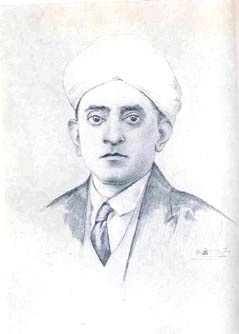

Sir C. P. Ramaswami Aiyar
BY "MOONY-CREST"

Sir. C. P. Ramaswami Aiyar
(from a Sketch by Mr. K. Ram Mohan Sastry)
When Sir. C. P. Ramaswami Aiyar gets up to address the judge in court, the instantaneous effect he produces upon you is, that he is somewhat of an actor posing for an audience, with his head half-inclined on one side, his turban almost perching on him without losing its balance for all the frequent shakes and nods of his head. Then, as you listen to him, his words flowing in such profusion, regardless of effort or deliberation, his eye-lids half closing and revealing his protruding pupils in a rather sweeping fashion, suggesting the extreme agility with which they can be used, he begins to attract you. Personality is a thing which is not possessed by all. It has such an overpowering influence on the mind. It is so with the Rt. Hon. Srinivasa Sastri. His personality captivates you. It fascinates all by its singular charm. The flawless white turban rising above his noble forehead, the faultless simplicity of his dress with the uppercloth encircling the neck and hanging down the shoulder, the half-amused smile on his compressed lips and the eyes ready to evince an agreeable surprise at anything and everything in general, invite one and all to have their eyes-fill of gaze at him. No one, who has had an opportunity of seeing him with his dhoti and long-coat, can wish for any other living picture of perfection. Sir C. P. Ramaswami Aiyar's personality is also fine. It does not bear Sastri's loftiness. It catches you by its brightness. You are feeling ashamed at your own insignificance by his side. He lords over you. You feel humiliated by the aristocratic aroma about him. You own his great advantages over others.
Sir C. P. Ramaswami Aiyar joined the bar with two good antecedents. He was the son of Mr. Pattabhirama Aiyar and he had a distinguished academic career. The one without the other was, by itself, sufficient to keep him from floundering on the rocks of disappointment. Natural talents aided his turning out an outstanding trial lawyer. Quickness of grasp and easy mastery of any subject that is offered, gives him enormous confidence. With his perception sharp, his demean our perfect, his address over-punctilious, he is impregnable to his adversary when he examines a witness or sums up the evidence. He never fights a point with unbecoming hardihood, when the judge is against him. Nay, he knows more things from a look, or a word, or a gesture even, of the judge, though he never seems to give any inkling of it to anybody, not even to the junior beside him.
Any day he is sure of his place at the bar. He moves among his peers, rarely noticing that they are his peers. The high offices he has held sit on him with significance. The judges respect his records; and he knows that too. He addresses them outside the court with a freedom that is not enjoyed by many others. He makes a fond display of his courteous habits. In the middle of an argument, his secretary or personal clerk comes and hands him a letter and whispers in his ear something, and he is not deaf or blind to things about him in his concentration on the case. He says "Beg your Lordship's pardon," snatches the envelope, opens it at once, holds the letter by both the hands, lifts it up almost to his eyes, peruses the lines while visibly making others marvel at his rapidity in reading them, returns it to his clerk saying, "Please as the man to wait for me at my chamber at Two O'clock"–all done in a manner to arrest attention from all around. When the opponent is on his legs, he never meddles with him by word or look. He even resumes his seat automatically when the opponent rises to address the judge. He is never lacking information or importance. Unless the judges are wary, they will be carried away by his eloquence. He brings to bear his wide experience of men and things on his case. He has seen many lands and many faces. He is rarely tardy of impressing these facts on others. Of course, he does it in his own polished way, neither too indirectly nor directly. He may be coming out of the court just after his case is lost, but he will never look it. He may even strike you to be the victor, till actually you are aware of the exact facts. He carries himself always with the air of a successful man in everything. He feels everywhere eyes gazing wonderingly at him. As he walks or talks or rushes past in his car, he is conscious of his presence pervading all.
"Let it not be said of you in after life that your minds have been cribbed, cabined, and confined by the narrowness of your bread-winning pursuits . . . Nor let the lot be yours, of those who spend the evening of their lives in vain regret, that their early years had no second interest, no field of intellectual labour or enjoyment other than the chosen occupation. . . ." was the impassioned appeal of the late Mr. V. Krishnaswami Aiyar to the assembled graduates of the year in Convocation at the Senate Hall. Sir C. P. Ramaswami Aiyar never suffers from want of a second interest. Rather he has too many. His vain regret may be that he has not allowed any one thing fully. Sanskrit and French always lend flavour to his culture. Horse-riding makes him look gallant almost like a Rajput prince of old. He rides in company with the Maharani of Cooch-Behar in the Ooty Gymkhana grounds or trots gaily through the residential quarters of Mylapore dispensing graceful recognitions on either side of the road. There is nothing that he has not learnt or done in these days of scientific advance. He flies through air from London to Karachi and speaks about it without much excitement of the performance.
Combined with his talents, Sir C. P. Ramaswami Aiyar has an energy, diligence, and alertness unequalled by many others of his capacity and rank in life. He is self-sufficing. From his early morning shave to his evening drive, everything personal is attended to by himself alone. Nothing is troublesome to him. He can attend office, make calls, write letters, and spare an hour or two for chat at the Club in the evening. No work is too much for him; no labour too unengaging. The Pykhara Electric Scheme never daunted him. He learnt the subject, was busy examining the spot with experts, and collected every available information and support for launching the proposed scheme.
His membership of the Madras Executive Council was a period enormous activity to him. There was never a Law Member's regime so full of the sensation of a Movie. Every day had its functions. From Ooty to Ramewaram, back from Rameswaram to Madras, at lightning speed in a car or train he was seen. Every station waited with garlands for him; every public place heard his voice. None considered him superficial or unimpressive. Students adored him; veterans envied him.
As a good debater in Councils, he has always extorted admiration from even his enemies. An unflinching fighter, he scarcely bestows too much thought on rebuffs. For he considers them too ordinary to engage a man of his ability. If the occasion demands his growing eloquent or furious, he has no hesitation. He can keep at bay a pack of howling wolves. He can crush them with grace, or carry on the game for his own pleasure. Public speaking has never wearied him. From his college days his readiness to make extempore speeches in English has gained him reputation. Ideas or words never fail him, though often the listener fails to be liberated from the sense of witnessing a performance, when, added to his rapid French or Latin quotations, he indulges in artificial poses and articulations.
It was an evening function at the Presidency College. The boys staged the play, Kalidasa's Sakuntalam, in Sanskrit. Sir C. P. Ramaswami Aiyar was requisitioned to speak encouraging words to the actors. He got upon the stage itself and stood in the glare of the foot-lights. He was ready to utilise the opportunity for appearing to the best advantage. He said: "I remember two decades and a half back, my standing on this same stage and acting a part in this very same drama." The students became very eager to hear about it. A mischievous voice from the gallery queried him in a sarcastic tone: "And what were you then?" In a minute the smart retort came: "Let me comfort my interlocutor that I was not then a pretty girl." It is this agility and resourcefulness that bring him undying plaudits. It is all born with him, never achieved.
The Poet Kalidasa wrote in the Raghuvamsa that old age announced itself to the King by reaching close to his ears. So do the stray silver streaks of hair near his ears force us to realise that Sir C. P. Ramaswami Aiyar is getting old. For never in his habit and looks does he convey languor. Full of ambition and hope, he is eternal youth. Every new prospect of advance in life seems to open before him at the lightness of his touch. Every fresh turn of fortune seems to find him equal to it.